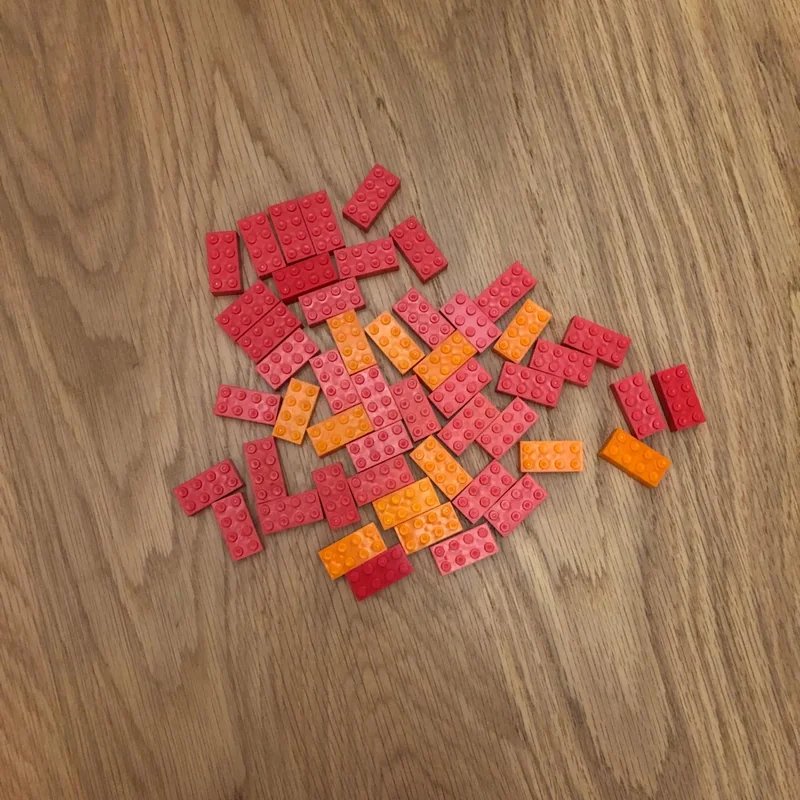
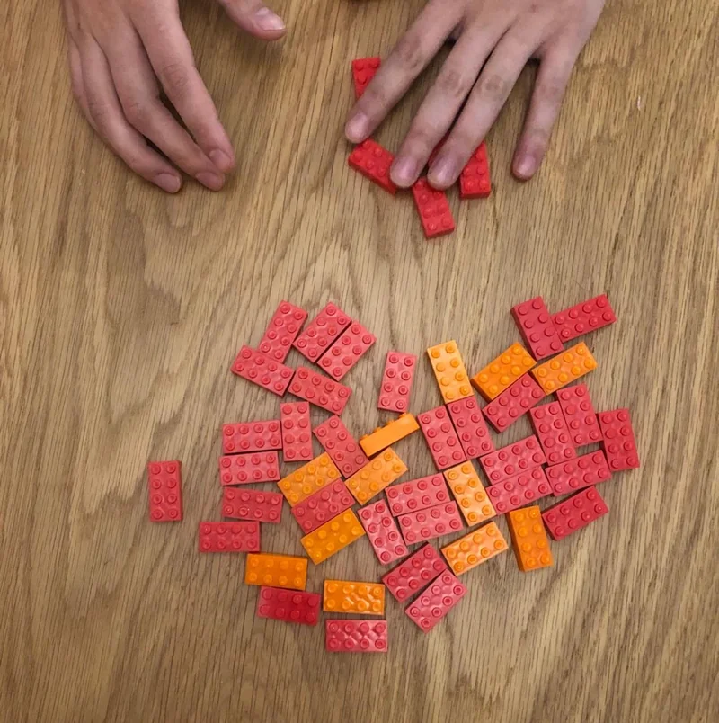
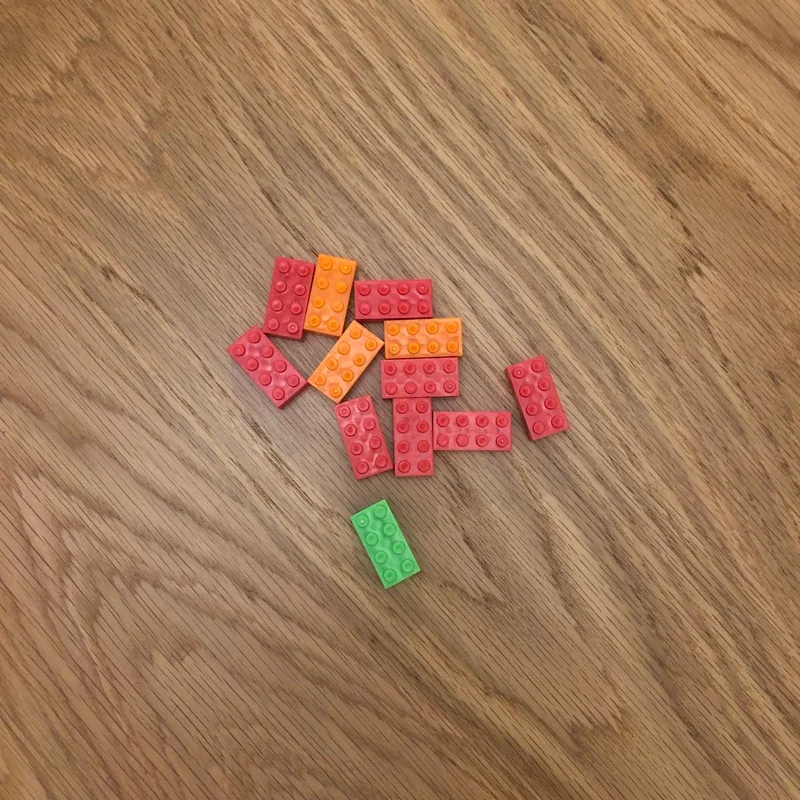
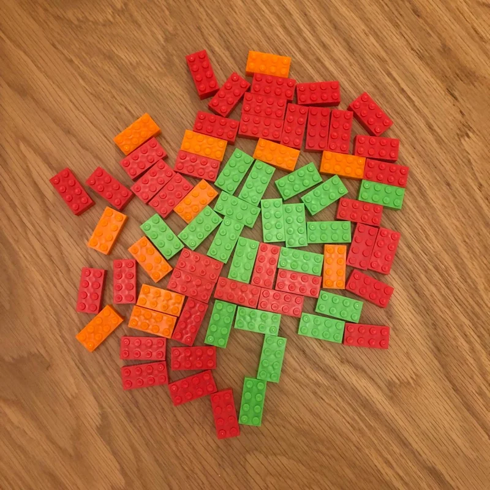

Una solución de gobernanza para los recursos comunes
Video de la solución
Puedes ver este video mientras desarrollas esta solución.
Bienvenida
Hola, mi nombre es Mateo y te acompañaré en esta solución. Si estás aquí es porque estás interesado/a en saber cómo cuidar y usar aquellos equipos tecnológicos que pertenecen a tu comunidad o equipo de trabajo. Para este caso, cuando hablamos de equipos tecnológicos nos referimos a un computador, una antena, una tablet, un plan de datos, etc. y a un bien material que no pertenece a nadie en particular, sino a una comunidad o grupo de personas.
💡 ¡Inspiración! En SOLE Colombia queremos que más personas usen el internet y los equipos tecnológicos en grupo, pues trae mucho beneficios:
- Usarla juntos es más divertido y nos invita a compartir ideas.
- Es más económico y nos invita a trabajar en equipo.
- Cuando hay otra persona a tu lado es menos probable que caigas en páginas maliciosas o estafas cibernéticas.
¿Qué es usar el juego para aprender a cuidar equipos en comunidad?
Las personas desarrollamos habilidades de trabajo en equipo, aprendemos a valorar la responsabilidad colectiva y entendemos la importancia de cooperar para el bienestar común en un entorno de apoyo. Una excelente estrategia para hacerlo es a través de juegos y actividades participativas.
¿Para qué sirve esta solución?
Para empezar, te sorprenderás si te digo que no queremos darte fórmulas mágicas sobre cómo cuidar y usar equipos tecnológicos en comunidad, pues no conocemos las particularidades de donde vives y entendemos que cada contexto es diferente, pero sí tenemos un juego divertido y profundo que te permitirá llegar a acuerdos con tu comunidad o equipo de trabajo llamado el Juego de los Peces. Con este juego esperamos que tu comunidad reflexione sobre el cuidado, la distribución y el manejo de los recursos comunes en el planeta tierra, mientras dialoga sobre cómo llegar a acuerdos para el uso compartido de los equipos que tienen a su disposición.
¿Qué necesitas?
- Debes contar con una bolsa de mínimo 80 dulces, frijoles o fichas del mismo tamaño con las que representarás los peces del juego.
- Una mesa.
- Sillas que rodeen la mesa.
- Cartulina tamaño pliego.
- Marcadores.
¿Cómo hacerlo?
-
Momento 1: primer juego
💡 Para el primer juego coloca 50 de los 80 peces en el centro de una mesa y dile a los participantes: “Hay 50 peces en un lago y ustedes son pescadores/as. Para pescar deben cumplir las siguientes instrucciones:
a. Cada uno puede pescar entre 0 y 5 peces por ronda.
b. No pueden hablar; solo pueden usar su lenguaje corporal.
c. Se reproducen los peces: nace 1 pez nuevo por cada 10 peces que queden disponibles en la mesa después de terminada la ronda. Ejemplo: si quedan 30 peces en la mesas, debes colocar tres peces nuevos.
d. Ustedes deciden cuándo terminan el juego.”
Después de dar las instrucciones deja la bolsa con los 30 peces extra sobre la mesa y verifica que cada persona tenga su momento para decidir cuántos peces va a tomar.
Al finalizar la ronda pide a los jugadores que devuelvan los peces y pregúntale al grupo:
- ¿Cómo se sintieron con la distribución de los peces? ¿Les parece justa?



-
Momento 2: segundo juego
💡 Para el segundo juego cambian las condiciones, así que explica las siguientes instrucciones en voz alta: “Ahora hay 50 peces en un lago y ustedes siguen siendo pescadores/as, la diferencia es que están en epoca de sequía, por lo que pescar es mucho más difícil. Hay mucha escacez y deben garantizar comida para alimentar a sus familias en las próximas semanas.” **Las reglas del juego son las mismas. Vuelve a mencionar a los participantes las reglas si es necesario.
Al terminar la ronda pregúntales:
-
¿qué cambió ahora? ¿cómo se sienten con la distribución?
-
¿Creen que pueda haber dificultades parecidas al momento de compartir los equipos equipos tecnológicos de su comunidad?
-
Momento 3: tercer juego
💡 Para el tercer juego la situación es la misma del segundo juego pero cambian las instrucciones: “hay 50 peces en un lago y ustedes siguen siendo pescadores/as, la diferencia es que están en epoca de sequía, por lo que pescar es mucho más difícil. Hay mucha escacez y deben garantizar comida para alimentar a sus familias en las próximas semanas. No hay mucho tiempo y por eso deben tomar decisiones rápidas.”
a. Cada uno puede pescar entre 0 y 5 peces por ronda. b. Pueden hablar 2 minutos antes de hacer la pesca para decidir cuál es la mejor forma de hacerlo. c. Se reproducen los peces: nace 1 pez nuevo por cada 10 peces que queden disponibles después de terminada la ronda. Ejemplo: si quedan 30 peces en las mesas, debes colocar tres peces nuevos. d. Ustedes deciden cuándo termina el juego.”
Al finalizar la ronda, pregúntale a los participantes:
-
¿El acuerdo al que llegaron al inicio del juego cambió algo?
-
¿Cuál de los juegos les parece que tuvo una distribución más justa? ¿Qué diferencias hay entre los tres juegos?
-
¿Cómo podría llevarse el acuerdo que han hecho para el uso y cuidado de los equipos tecnológicos que tienen a su disposición?
-
Momento 4: el secreto de llegar a acuerdos
💡 Cuéntale a las personas los secretos del juego para llegar a acuerdos:
- Los pescadores representan a cada una de las personas de tu comunidad.
- Los peces representan los recursos finitos o equipos tecnológicos que están a disposición de la comunidad, por ejemplo, computadores, antenas de internet, planes de datos, etc. Estos peces también aplican como una analogía sobre el manejo de recursos finitos como la tierra, el agua, la comida o el aire que respiramos.
La clave de este juego está en que entre más peces cojamos para nosotros mismos, menos peces se reproducirán; por lo que todos perdemos.
Asimismo, entre menos peces cojamos, más peces se reproducirán en la mesa y la comunidad tendrá más recursos.


- Momento 5: lleguemos a un acuerdo
Dale a los participantes la cartulina y los marcadores. Invítalos a escribir acuerdos sobre cómo manejar los recursos o equipos tecnológicos que tienen a su disposición. Te recomendamos descargar la siguiente plantilla para guiarte en la conversación.
[Reglas uso y cuidado compartido de equipo tecnológicos.pptx](¿Cómo usar el juego para aprender a cuidar equipos 12a2bd68c5b6801a8d61de57be65d679/Reglas_uso_y_cuidado_compartido_de_equipo_tecnolgicos.pptx)
Estas preguntas son solamente una guía, por lo que puedes añadir o quitar las preguntas que veas pertinentes. Pídele a los participantes que dejen por escrito los acuerdos a los que llegaron e invítalos a compartirlos con el resto de la comunidad. Esto es fundamental ya que, en momentos de conflicto o dificultades para resolver un problema, pueden volver a lo escrito para llegar a soluciones o para replantear nuevos acuerdos.
¿Cómo funciona el juego?
Primer juego: en el primer juego las personas suelen consumir los peces con base en sus intereses y los comportamientos de otras personas. Si una persona consume muchos peces (5) las demás personas suelen verse impulsadas a consumir la misma cantidad; lo mismo aplica a la inversa, si una persona consume pocos peces, las demás personas (con algunas excepciones) suelen verse motivadas a consumir menos. Ahora bien, no hay fórmulas mágicas ni el futuro está escrito sobre lo que pueda pasar, la clave está en observar los comportamientos de las personas, ya que esto te permitirá realizar reflexiones potentes sobre el manejo responsable y comunitario de los recursos finitos.
Segundo juego: debido al condicionamiento de la sequía y la urgencia de alimentar a la familia, en el segundo juego las personas suelen consumir más que en el primero y el tercero, lo que ocasiona que la distribución de los peces sea más inequitativa y se acabe más rápido. En otras palabras, se genera más tensión entre el beneficio personal y el beneficio común. En psicología del comportamiento esta situación se llama sesgo al presente: los seres humanos, al sentir que un recurso está próximo a acabarse, activamos una sensación de perdida que nos impulsa a consumir irracionalmente aun cuando no lo necesitamos.
Tercer juego: para este punto los participantes suelen llegar a acuerdos consumiendo menos peces para que se reproduzcan más, previniendo situaciones de escasez y encontrando alternativas comunitarias para el manejo equitativo y justo de los recursos; sin embargo, cabe la posibilidad de que esto no ocurra, lo importante es que les cuentes el valor de llegar a acuerdos en el manejo de los recursos finitos o los equipos tecnológicos. Cuando llegamos a acuerdos, todas las personas podemos vernos beneficiadas; por el contrario, cuando todos buscamos nuestros beneficios personales, los recursos de los que nos podemos ver beneficiados tienden a destruirse, así como nuestra oportunidad de seguirnos beneficiando de ello.
¿Cuánto es suficiente? La tragedia de los comunes
La tragedia de los comunes es un problema sobre las relaciones sociales y el comportamiento humano descrito por Garret Hardin en 1968 para la revista Science, en la que plantea un experimento mental imaginando un campesino que decide, en una tierra compartida con otros campesinos, empezar a poner más vacas, ya que le genera más ganancias y beneficios personales. Los demás campesinos deciden hacer lo mismo, por lo que el campo se llena de vacas, la tierra es sobrexplotada y se deteriora con rapidez. Asimismo, los campesinos se quedan con muchas vacas y sin una tierra para producir. Este dilema muestra cómo podemos destruir recursos finitos compartidos si cada uno de nosotros busca, solamente, el beneficio personal y nos invita a pensar en la importancia de llegar a acuerdos sobre los recursos compartidos.
¡Llegar a acuerdos sí funciona!
Queremos compartirte la historia de Alexander, un referente de la comunidad de la vereda en Agrado, ubicada en el Departamento del Cauca. Alexander, junto con su comunidad, logró llegar a un acuerdo sobre cómo usar el internet a través de un acuerdo que hicieron con la tienda que está ubicada al lado de la caseta comunal. Escuchemos su historia:

Soluciones recomendadas
- ¿Cómo instalar mi antena 3 - 4G?
- ¿Cómo compartir los computadores disponibles?
- Haz una colecta para pagar internet comunitario